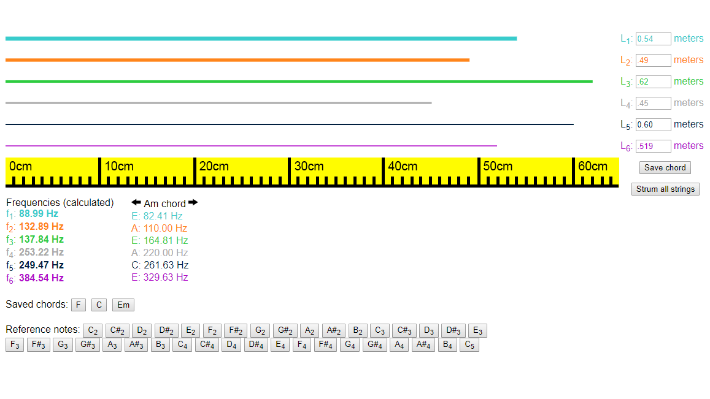

Guitars and String Vibrations
Grades 8-9, 70min
In this lesson, students apply their understanding of direct and inverse variation to making music with guitar strings. Students learn the equation governing the relationship between a string’s frequency, wave speed and length, and then use a digital guitar simulation to calculate the wave speeds and string lengths needed to create common chords. After playing through a simple song as a class, students construct and tune cardboard ukuleles to make their learning tangible.
Topics addressed
- Direct and inverse variation
- Basic physics of string vibrations and waves
- Primary CT concept: abstraction. The frequency equation uses a simplified wave speed parameter to represent physical concepts like string thickness and tension, and students abstract the detailed math away when building their physical ukuleles.
Students will be able to
- Explain how length and wave speed affect the frequency of a vibrating string
- Explain how guitar strings are able to play different notes
- Create a simple cardboard ukulele with strings tuned to different notes
Materials
-
Slides:


-
Student worksheet:


- Digital guitar simulation
- Cardboard boxes - shoeboxes will work, or you can order something like these from Home Depot
- Extra large rubber bands in at least three different sizes
- Wooden dowels
- A guitar is optional, but will help students connect their learning to a real instrument
Suggested lesson breakdown
This activity is more of a practice/review project than a teaching tool, and therefore works best towards the end of the unit. Students can work individually or in pairs. The timing suggestions below are estimated and are very flexible based on your students’ pace.
- 10min – introduction to string vibrations and the frequency formula
- 10min – quick practice and check for understanding
- 10min – calculating wave speeds in the digital guitar simulator
- 20min – calculating string lengths for chords in the digital guitar simulator
- 5min – class play-along to “Imagine” by John Lennon
- 15min – constructing and playing cardboard ukuleles
Common Core standards
-
CCSS.Math.Content.HSF.BF.4.A
Solve an equation of the form f(x) = c for a simple function f that has an inverse and write an expression for the inverse. For example, f(x)=2x³ or f(x)=(x+1)/(x-1) for x≠1. -
CCSS.Math.Content.HSF.LE.A.1.B
Recognize situations in which one quantity changes at a constant rate per unit interval relative to another. -
CCSS.Math.Content.HSF.LE.B.5
Interpret the parameters in a linear or exponential function in terms of a context.